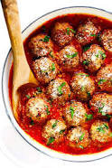

Meatballs

Description:
Who doesn't love a good meatball? Avoid the frozen isle with this take on a classic Italian-American meal. I guarantee that everyone, even your stubborn Italian grandmother, will love these! This recipe focuses on quality, so get ready to make some balls!
Ingredients:
- Ground pork & beef mix 1:2 ratio
- Tomato sauce
- Garlic
- Adobo
- Parmesan cheese
- Eggs
- Bread crumbs
- Pam spray
Steps:
- Get a large bowl (something sturdy to mix with)
- Add meat, 3 grated cloves of garlic, adobo, bread crumps, and grated cheese
- Mix with your hands! (remove jewelry)
- Once mixed, add beatened eggs and mix once again (you may need to add more breadcrumbs if the mix is too wet)
- Measure out 5 oz balls and place them on a baking sheet lined with parchment paper
- Spray the tops with pam and bake for 20 minutes
- In a pot, add the tomato sauce with 4 grated cloves and adobo, bring to a simmer
- Once balls are ready, place them in the sauce and cook for a few hours
- Serve them with spaghetti and enjoy!
Home